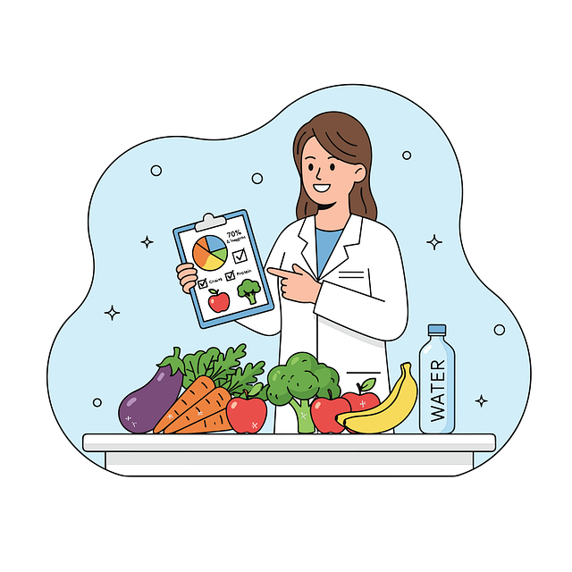

Balanced Plate focuses on creating meals that combine a variety of food components in practical portions.
The aim is to make balanced eating easier and more realistic for everyday life, rather than promoting complicated diets or restrictive eating approaches.
Understand your plate with clear information about the ingredients, portions and estimated nutritional
content of each meal.
Discover what makes up your meal and gain a better understanding of how the different
food components come together on your plate.
We use Journable as a supporting tool in our meal-analysis process to help identify food components and estimate portions,
calories and macronutrients. This helps us turn our meal information into simple, customer-friendly information.

We use Journable as a supporting tool to help us understand the food components, portions,
calories and macronutrients in our meals.
We then review the information and present it in a simple,
easy-to-understand format, helping you gain clearer insight into what makes up your meal.
Learn more about Journable and explore the application on its official website.
JournableAt Nourish Plate, we focus on meals that are practical, enjoyable and realistic to prepare at home.
Our meals are designed to make everyday meal preparation easier by bringing together a variety of ingredients,
practical portions and simple preparation ideas.